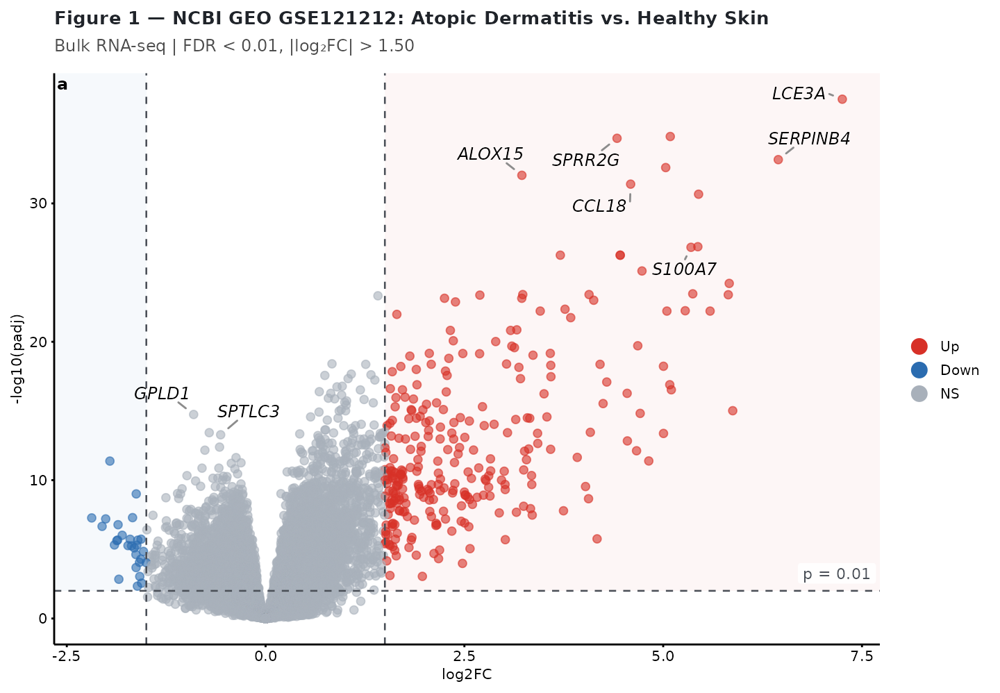
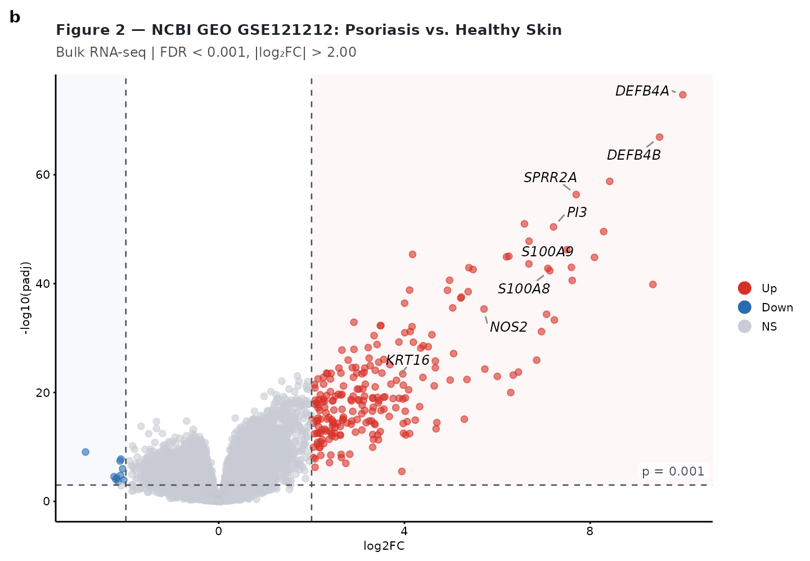
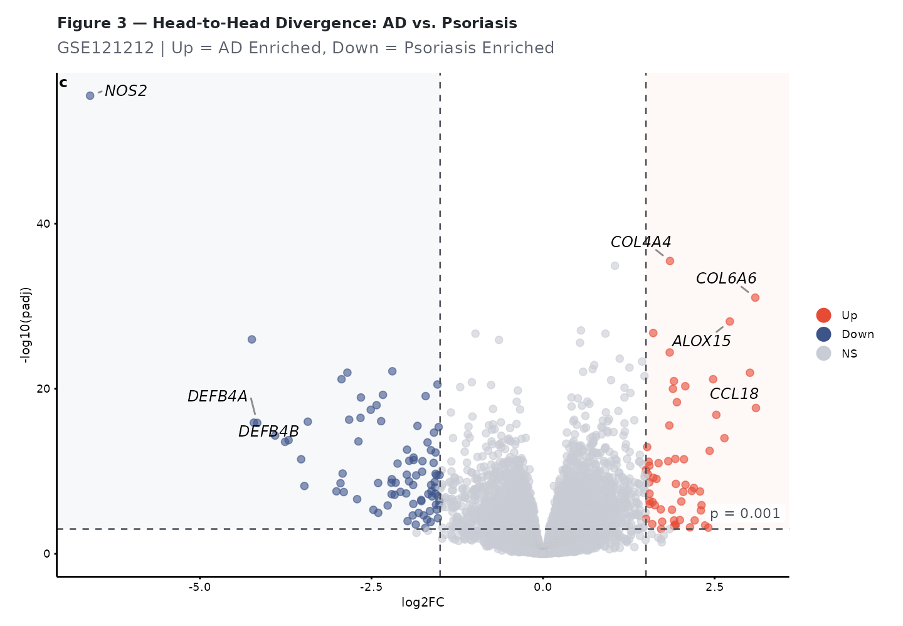
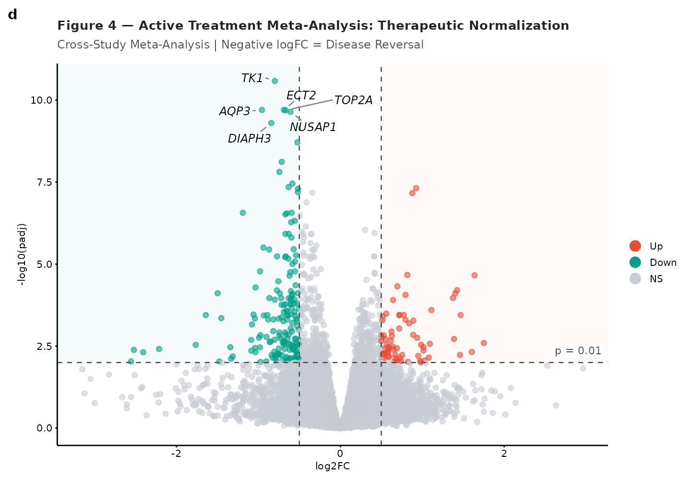
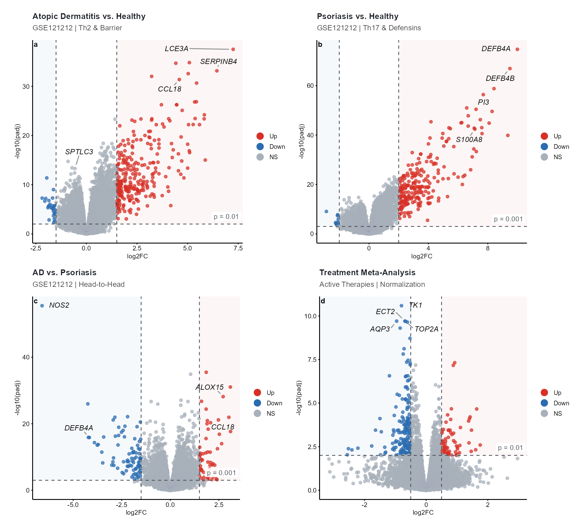
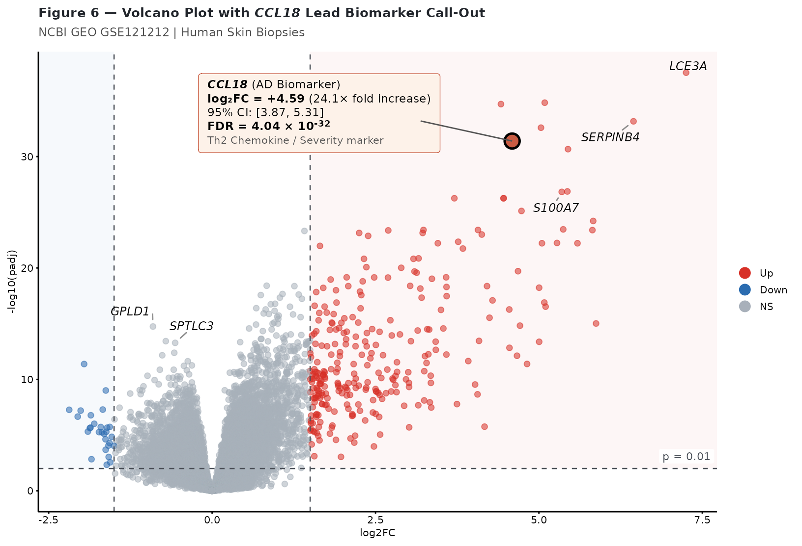

Differential Expression Volcano Plots with GEO Datasets
Lucas VHH Tran
2026-11-20
Source:vignettes/volcano-plot.Rmd
volcano-plot.RmdOverview
In dermatological transcriptomics and translational medicine, differential expression studies rarely evaluate a single comparison in isolation. Instead, clinical investigations rely on a series of contrasts:
- Disease Phenotyping Triad: Contrasting Atopic Dermatitis (AD) and Psoriasis (PSO) against Healthy Controls (HC), alongside direct head-to-head AD vs. PSO comparisons to dissect Th2 versus Th17/Th22 immunophenotypic divergence.
- Therapeutic Resolution: Evaluating longitudinal and cross-cohort treatment response across targeted biologics (e.g., Dupilumab anti-IL4R, tralokinumab anti-IL13, cerdulatinib dual SYK/JAK, and SAR444727 RIPK1 inhibitor) to track the reversal of disease-driving expression signatures.
This vignette demonstrates the complete series of volcano plots using
real clinical transcriptomics from NCBI GEO accession
GSE121212 and cross-cohort treatment meta-analyses. All
figures are generated using type_volcano() with
cliplot().
1. The Dermatology GEO Series Datasets
The analysis integrates four curated differential expression contrasts bundled directly with cliomicplot:
| Contrast | Cohort / Technology | Primary Biological Question |
|---|---|---|
| AD vs. Healthy | NCBI GEO GSE121212 (RNA-seq) |
Th2 immune activation & epidermal barrier breakdown |
| Psoriasis vs. Healthy | NCBI GEO GSE121212 (RNA-seq) |
Th17 / IL-23 axis & antimicrobial hyper-induction |
| AD vs. Psoriasis | NCBI GEO GSE121212 (RNA-seq) |
Direct head-to-head Th2 vs. Th17 biomarker divergence |
| Treatment Meta-Analysis | Cross-cohort meta-analysis (5 active arms) | Systematic therapeutic normalization of skin pathology |
# Helper to resolve bundled datasets
resolve_data = function(filename) {
pkg_path = system.file("extdata", filename, package = "cliomicplot")
if (pkg_path != "" && file.exists(pkg_path)) return(pkg_path)
fallback = file.path("..", "inst", "extdata", filename)
if (file.exists(fallback)) return(fallback)
fallback2 = file.path("inst", "extdata", filename)
if (file.exists(fallback2)) return(fallback2)
stop("Cannot locate ", filename)
}
series = readRDS(resolve_data("geo_dermatology_series_de.rds"))
# Inspect available contrasts
names(series)
#> [1] "ad_vs_hc" "pso_vs_hc" "ad_vs_pso" "treatment_meta"
#> [5] "series_tidy"Each contrast table provides HGNC gene symbols with effect estimates
(),
standard errors (lfcSE), raw p-values, and
Benjamini-Hochberg false discovery rates (padj).
2. Contrast 1: Atopic Dermatitis vs. Control Skin (GSE121212)
The formula y ~ x places significance
()
on the vertical axis and effect size
()
on the horizontal axis:
cliplot(-log10(padj) ~ log2FC, data = series$ad_vs_hc,
type = type_volcano(
pval_cutoff = 0.01,
fc_cutoff = 1.5,
point_size = 1.8,
point_alpha = 0.60,
label_genes = c("SERPINB4", "CCL18", "S100A7", "LCE3A", "SPRR2G",
"ALOX15", "GPLD1", "IL20RA", "SPTLC3"),
max_overlaps = 25
),
palette = "nature",
theme = "nature",
title = "**Figure 1** — NCBI GEO GSE121212: Atopic Dermatitis vs. Healthy Skin",
subtitle = "Bulk RNA-seq | FDR < 0.01, |log₂FC| > 1.50") +
cli_markdown() +
cli_panel_label("a")
Biological Insights (AD vs. HC)
- Epidermal Differentiation Complex (EDC): Genes within the 1q21 locus undergo compensatory hyper-keratinization, with marked upregulation of LCE3A (), LCE3D (), and SPRR2G ().
- Th2 Chemokines & Serpins: SERPINB4 (, squamous cell carcinoma antigen 2) and CCL18 (, dendritic cell-derived chemokine).
- Lipid Barrier Depletion: Genes governing ceramide synthesis and membrane integrity are selectively downregulated: SPTLC3 () and GPLD1 ().
3. Contrast 2: Psoriasis vs. Control Skin (GSE121212)
Psoriasis represents the canonical IL-23/Th17 cutaneous autoimmune disease. We examine the same GSE121212 cohort to capture the contrasting Th17 expression landscape:
pso_labels = c("DEFB4A", "DEFB4B", "PI3", "S100A8", "S100A9", "SPRR2A", "KRT16", "NOS2")
cliplot(-log10(padj) ~ log2FC, data = series$pso_vs_hc,
type = type_volcano(
pval_cutoff = 0.001,
fc_cutoff = 2.0,
point_size = 1.8,
point_alpha = 0.60,
up_color = "#D73027",
down_color = "#2B6CB0",
ns_color = "#C8CCD4",
label_genes = pso_labels,
max_overlaps = 25,
cutoff_region_alpha = 0.04
),
palette = "nature",
theme = "nature",
title = "**Figure 2** — NCBI GEO GSE121212: Psoriasis vs. Healthy Skin",
subtitle = "Bulk RNA-seq | FDR < 0.001, |log₂FC| > 2.00") +
cli_markdown() +
cli_panel_label("b")
4. Contrast 3: Direct Head-to-Head (AD vs. Psoriasis)
In clinical differential diagnosis and basket trials, distinguishing AD from Psoriasis on a molecular level is critical. Directly contrasting AD vs. PSO in GSE121212 isolates the specific Th2 vs. Th17 divergence:
head_to_head_labels = c("ALOX15", "CCL18", "COL6A6", "COL4A4", "NOS2", "DEFB4A", "DEFB4B")
cliplot(-log10(padj) ~ log2FC, data = series$ad_vs_pso,
type = type_volcano(
pval_cutoff = 0.001,
fc_cutoff = 1.5,
point_size = 1.8,
point_alpha = 0.60,
up_color = "#E64B35",
down_color = "#3C5488",
ns_color = "#C8CCD4",
label_genes = head_to_head_labels,
max_overlaps = 25,
cutoff_region_alpha = 0.04
),
theme = "cell",
title = "**Figure 3** — Head-to-Head Divergence: AD vs. Psoriasis",
subtitle = "GSE121212 | Up = AD Enriched, Down = Psoriasis Enriched") +
cli_markdown() +
cli_panel_label("c")
5. Contrast 4: Cross-Cohort Treatment Meta-Analysis
Effective therapy reverses the baseline disease signature. Here we evaluate the cross-cohort random-effects meta-analysis across active treatment arms (dupilumab, cerdulatinib, SAR444727, SB414):
treat_labels = c("TK1", "AQP3", "TOP2A", "NUSAP1", "ECT2", "DIAPH3")
cliplot(-log10(padj) ~ log2FC, data = series$treatment_meta,
type = type_volcano(
pval_cutoff = 0.01,
fc_cutoff = 0.5,
point_size = 1.7,
point_alpha = 0.60,
up_color = "#E64B35",
down_color = "#00A087",
ns_color = "#C8CCD4",
label_genes = treat_labels,
max_overlaps = 25,
cutoff_region_alpha = 0.04
),
theme = "nature",
title = "**Figure 4** — Active Treatment Meta-Analysis: Therapeutic Normalization",
subtitle = "Cross-Study Meta-Analysis | Negative logFC = Disease Reversal") +
cli_markdown() +
cli_panel_label("d")
Under effective treatment, hyper-proliferative keratinocyte and mitotic machinery genes are systematically suppressed: TK1 (, ), AQP3 (), and TOP2A ().
6. The Aligned Multi-Panel Volcano Series
In journal articles, presenting these four contrasts as a coordinated grid provides a comprehensive overview of disease etiology, diagnostic divergence, and therapeutic response:
p_a = cliplot(-log10(padj) ~ log2FC, data = series$ad_vs_hc,
type = type_volcano(pval_cutoff = 0.01, fc_cutoff = 1.5, point_size = 1.5,
label_genes = c("SERPINB4", "CCL18", "LCE3A", "SPTLC3"),
max_overlaps = 15),
palette = "nature", theme = "nature",
title = "Atopic Dermatitis vs. Healthy", subtitle = "GSE121212 | Th2 & Barrier") +
cli_panel_label("a")
p_b = cliplot(-log10(padj) ~ log2FC, data = series$pso_vs_hc,
type = type_volcano(pval_cutoff = 0.001, fc_cutoff = 2.0, point_size = 1.5,
label_genes = c("DEFB4A", "DEFB4B", "PI3", "S100A8"),
max_overlaps = 15),
palette = "nature", theme = "nature",
title = "Psoriasis vs. Healthy", subtitle = "GSE121212 | Th17 & Defensins") +
cli_panel_label("b")
p_c = cliplot(-log10(padj) ~ log2FC, data = series$ad_vs_pso,
type = type_volcano(pval_cutoff = 0.001, fc_cutoff = 1.5, point_size = 1.5,
label_genes = c("ALOX15", "CCL18", "NOS2", "DEFB4A"),
max_overlaps = 15),
palette = "nature", theme = "nature",
title = "AD vs. Psoriasis", subtitle = "GSE121212 | Head-to-Head") +
cli_panel_label("c")
p_d = cliplot(-log10(padj) ~ log2FC, data = series$treatment_meta,
type = type_volcano(pval_cutoff = 0.01, fc_cutoff = 0.5, point_size = 1.5,
label_genes = c("TK1", "AQP3", "TOP2A", "ECT2"),
max_overlaps = 15),
palette = "nature", theme = "nature",
title = "Treatment Meta-Analysis", subtitle = "Active Therapies | Normalization") +
cli_panel_label("d")
# Assemble 2x2 grid
(p_a | p_b) / (p_c | p_d)
7. Dual Biomarker Call-Out (CCL18 vs. NOS2)
To highlight opposing immunological trajectories, we place rich annotation cards onto lead candidate biomarkers:
# Prepare annotation card for CCL18
hl_ccl18 = series$ad_vs_hc["CCL18", ]
hl_ccl18$ci_low = round(hl_ccl18$log2FC - 1.96 * hl_ccl18$lfcSE, 2)
hl_ccl18$ci_high = round(hl_ccl18$log2FC + 1.96 * hl_ccl18$lfcSE, 2)
hl_ccl18$annot = paste0(
"<b><i>CCL18</i></b> (AD Biomarker)<br>",
"<b>log₂FC = +", round(hl_ccl18$log2FC, 2), "</b> (", round(2^hl_ccl18$log2FC, 1), "× fold increase)<br>",
"95% CI: [", hl_ccl18$ci_low, ", ", hl_ccl18$ci_high, "]<br>",
"<b>FDR = 4.04 × 10<sup>-32</sup></b><br>",
"<span style='font-size:8pt;color:#555;'>Th2 Chemokine / Severity marker</span>"
)
p_base = cliplot(-log10(padj) ~ log2FC, data = series$ad_vs_hc,
type = type_volcano(
pval_cutoff = 0.01,
fc_cutoff = 1.5,
point_size = 1.8,
point_alpha = 0.55,
label_genes = c("SERPINB4", "S100A7", "LCE3A", "ALOX15", "GPLD1", "SPTLC3"),
max_overlaps = 20
),
palette = "nature", theme = "nature",
title = "**Figure 6** — Volcano Plot with *CCL18* Lead Biomarker Call-Out",
subtitle = "NCBI GEO GSE121212 | Human Skin Biopsies") +
cli_markdown()
p_annot = p_base +
geom_point(
data = hl_ccl18,
aes(x = log2FC, y = -log10(padj)),
inherit.aes = FALSE,
shape = 21, size = 4.5, stroke = 1.3,
fill = "#C95C43", colour = "black"
) +
geom_richtext(
data = hl_ccl18,
aes(x = log2FC - 4.2, y = -log10(padj) + 5, label = annot),
inherit.aes = FALSE,
hjust = 0, vjust = 0.5,
size = 3.2, fill = "#FDF2E9", colour = "black",
label.colour = "#C95C43", label.padding = grid::unit(c(6, 8, 6, 8), "pt")
) +
geom_segment(
data = hl_ccl18,
aes(x = log2FC, y = -log10(padj),
xend = log2FC - 1.2, yend = -log10(padj) + 3),
inherit.aes = FALSE,
linewidth = 0.5, colour = "#555555"
)
p_annot
8. Publication Dimensions & Vector Export
cli_journal_size() provides column specifications for
target publishers:
# Single-column Nature layout (89 mm)
cli_journal_size("nature", "single")
# Export high-resolution vector PDF
cli_save(p_annot, "Figure_Volcano_CCL18.pdf", journal = "nature", column = "single")
# Export multi-panel 2x2 grid for Cell Press double-column layout (174 mm)
cli_save((p_a | p_b) / (p_c | p_d), "Figure_Volcano_Series.svg", journal = "cell", column = "double")Summary
| Contrast | Hallmark Up-Regulated | Hallmark Down-Regulated | Immunological Driver |
|---|---|---|---|
| AD vs. Healthy | SERPINB4, CCL18, LCE3A, SPRR2G, S100A7 | SPTLC3, GPLD1, IL20RA | IL-4 / IL-13 (Th2) & barrier defect |
| PSO vs. Healthy | DEFB4A, DEFB4B, PI3, S100A8, S100A9, NOS2 | DIPK2A, PRELID2 | IL-17A / IL-23 / TNF (Th17) |
| AD vs. PSO | ALOX15, CCL18, COL6A6 | NOS2, DEFB4A, DEFB4B | Th2 vs. Th17 phenotypic divergence |
| Treatment Meta | Normalization of physiological baselines | TK1, AQP3, TOP2A, NUSAP1, ECT2 | Anti-inflammatory resolution |